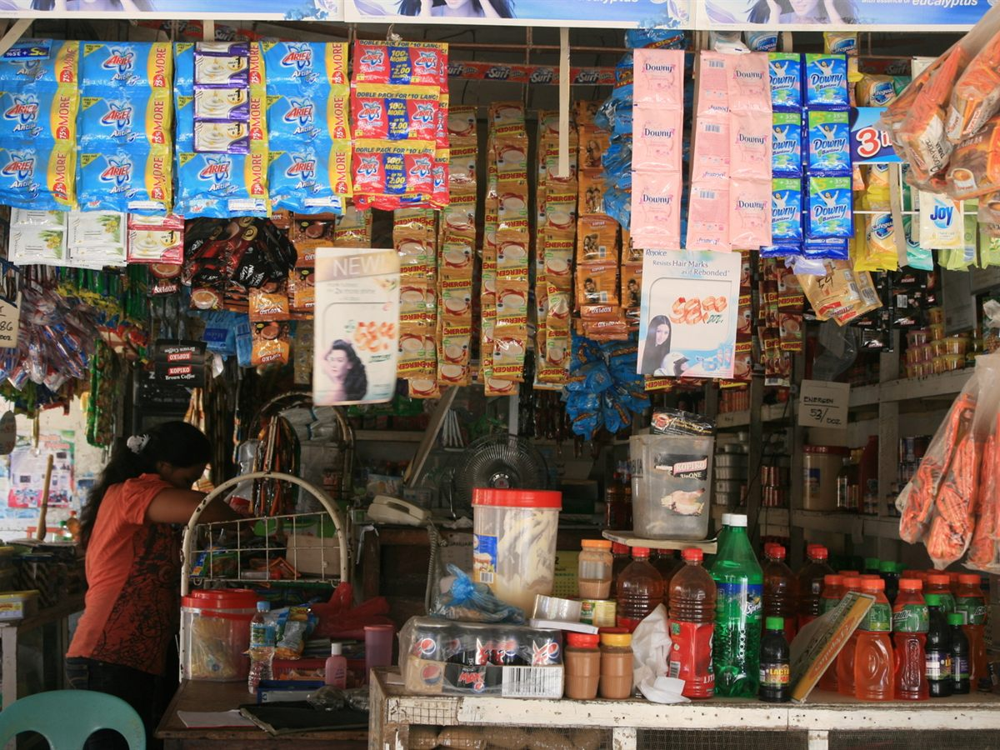

Tingi
Buying in small portions to get through one day at a time.Pagbili nang paunti-unti para mairaos ang isang araw.
One sachet of shampoo, one cup of rice, one piece of candy. Tingi lets families with a daily budget buy only what they need today.Isang sachet ng shampoo, isang tasang bigas, isang pirasong kendi. Sa tingi, nabibili ng pamilyang may arawang budget ang kailangan lang nila ngayong araw.
Ang sasagutin ng kwentong itoWhat this story answers
- Why do families buy one sachet or one cup at a time?Bakit isang sachet o isang tasa lang ang binibili ng mga pamilya bawat beses?
- What does a typical tingi purchase look like?Ano ang hitsura ng karaniwang pagbili nang tingi?
- How does the tindera decide what to sell per piece?Paano nagpapasya ang tindera kung ano ang ibebenta nang paisa-isa?

Tingi comes from the Filipino word for selling by the piece. In a sari-sari store nothing has to be bought whole: one egg, three pieces of candy, a half-cup of rice, a splash of cooking oil poured into a small plastic bag.Ang tingi ay galing sa salitang Filipino para sa pagbebenta nang paisa-isa. Sa sari-sari store, walang kailangang bilhin nang buo: isang itlog, tatlong pirasong kendi, kalahating tasang bigas, kaunting mantikang ibinuhos sa maliit na plastik.
The habit is old. A 2011 study of sachet marketing, citing the anthropologist William Henry Scott, notes that sixteenth-century chroniclers saw small-portion selling as standard practice, and that the Tagalog word alig-ig described buying a little at a time. The same study says tingi became a survival strategy for Filipinos after World War II, when so many were starting over with almost nothing.Matagal na ang gawing ito. Ayon sa isang pag-aaral noong 2011 tungkol sa marketing ng sachet, na sumipi sa antropologong si William Henry Scott, nakita na ng mga cronista noong ika-16 na siglo na karaniwan ang pagbebenta nang maliliit, at ang salitang Tagalog na alig-ig ay tumutukoy sa pagbili nang paunti-unti. Sinasabi rin ng parehong pag-aaral na naging paraan ng mga Pilipino para mabuhay ang tingi pagkatapos ng Ikalawang Digmaang Pandaigdig, nang napakaraming nagsisimula muli nang halos walang-wala.
For many families, money arrives a little at a time, so spending has to happen the same way. A whole kilo of rice or a full bottle of shampoo asks for money that is not in the pocket today. One cup, one sachet, one piece does not.Para sa maraming pamilya, paunti-unti ring dumarating ang pera, kaya paunti-unti rin ang paggastos. Ang isang buong kilong bigas o isang buong bote ng shampoo ay humihingi ng perang wala sa bulsa ngayong araw. Ang isang tasa, isang sachet, isang piraso ay hindi.
Behind the counter, the tindera does the work that makes this possible. She buys in larger amounts, breaks them down into small portions, and earns a small margin on each one. She is open early and late, and she is a few steps from your door.Sa likod ng counter, ang tindera ang gumagawa ng trabahong nagpapaposible nito. Bumibili siya nang maramihan, hinahati ito sa maliliit na bahagi, at kumikita nang kaunti sa bawat isa. Bukas siya mula maaga hanggang gabi, at ilang hakbang lang siya mula sa pinto mo.
But tingi has two sides. It is a kindness that keeps a household going, and it is also a limit of being poor. A P&G executive interviewed for one study put it plainly: the bigger the pack, the lower the price per unit, but the tradeoff is the cash needed all at once. A family that cannot pay that cash up front buys small. “Sige, tingi lang” is a practical answer and a quiet compromise at the same time.Pero may dalawang mukha ang tingi. Kabaitan ito na nagpapatuloy sa isang tahanan, at hangganan din ito ng pagiging mahirap. Diretsong sinabi ng isang executive ng P&G na nakapanayam sa isang pag-aaral: kapag mas malaki ang pakete, mas mababa ang presyo bawat yunit, pero kapalit nito ang perang kailangan nang isahan. Ang pamilyang hindi kayang maglabas agad ng ganoong pera ay bumibili nang maliit. Ang “Sige, tingi lang” ay praktikal na sagot at tahimik na pakikibagay nang sabay.
“Isang sachet lang? Sige, tingi lang.”
PinagkunanSources
Sy-Changco, J. A., Pornpitakpan, C., Singh, R., & Bonilla, C. M. (2011). Managerial insights into sachet marketing strategies and popularity in the Philippines. Asia Pacific Journal of Marketing and Logistics, 23(5), 755–772. https://doi.org/10.1108/13555851111183129
Page 1 / 5Pahina 1 / 5